作品集
蘑菇沼泽
“幽暗的森林深处，古老的遗迹早已被巨大的菌类吞没。微光从孢子与菌群间升起，照亮中央沉睡的神像——仿佛这里的信仰，从未真正消亡。”
蘑菇沼泽是一个奇幻风格的环境场景，描绘了一片被繁茂菌类占据的神秘湿地：巨型蘑菇拔地而起，荧光菌群在阴影间隐隐发光，共同构成一处既陌生又充满生命力的异境生态。
项目包含了核心资产模型制作，程序化材质与PBR纹理绘制，关卡搭建与灯光设计，在 Unreal Engine 中呈现出一个细节丰富、极具沉浸感的奇幻生态系统。
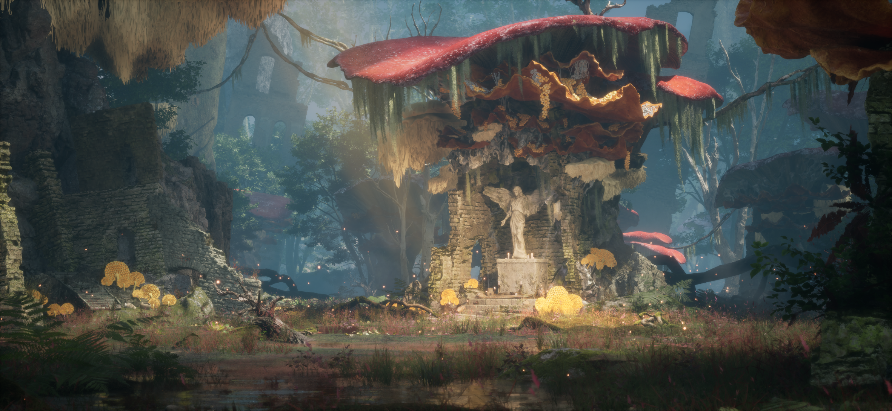
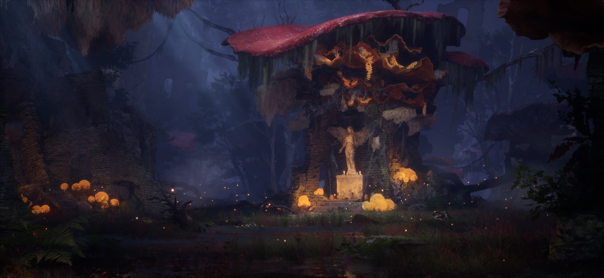
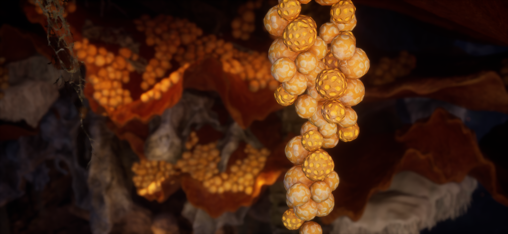
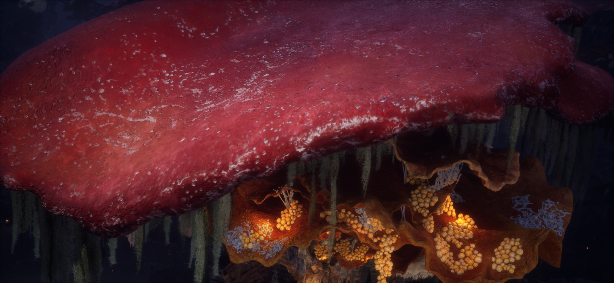
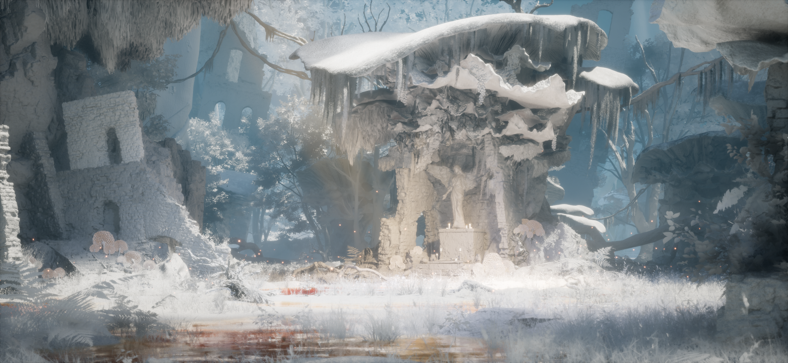

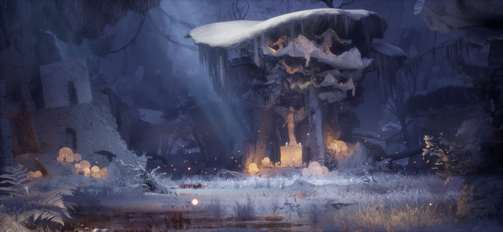
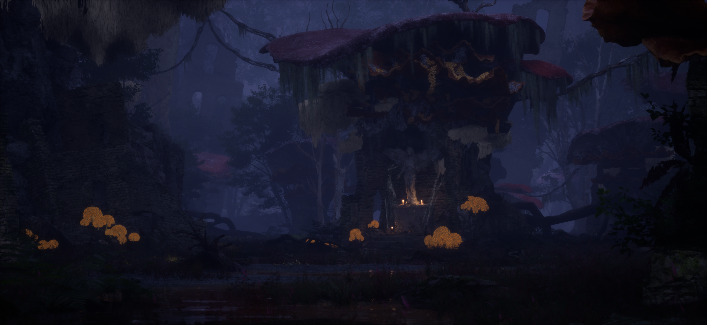

资产和材质
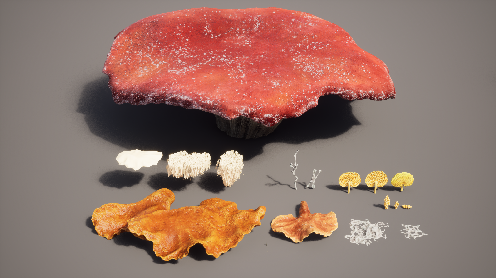
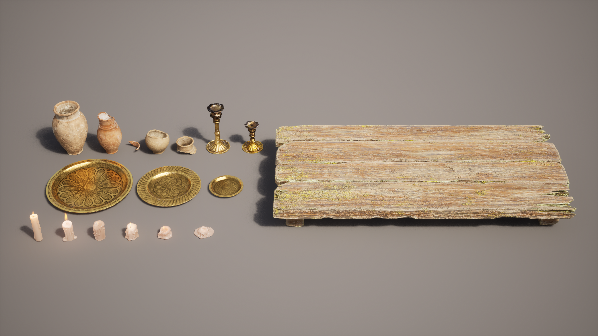
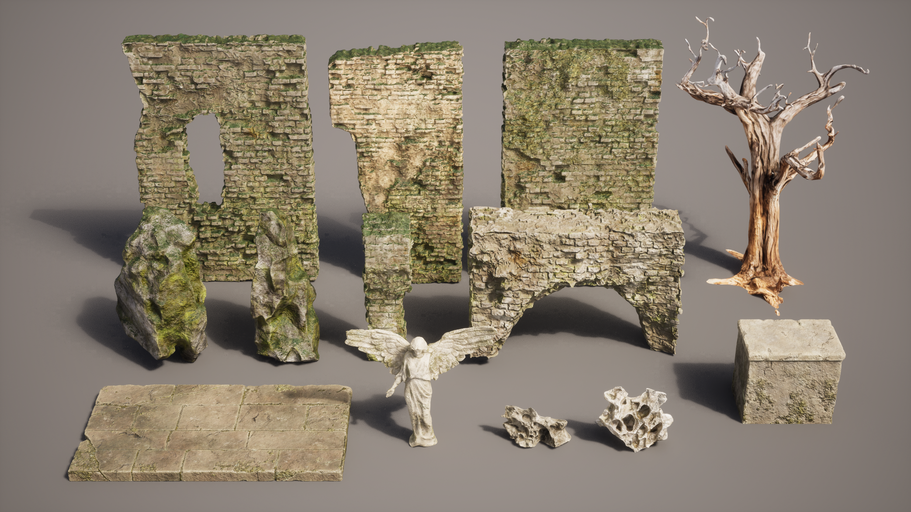
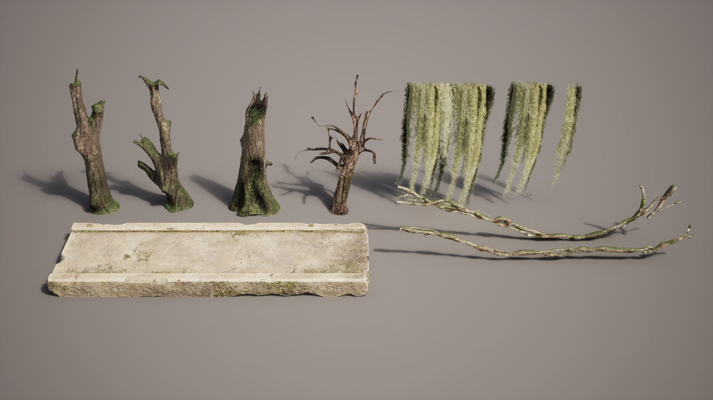
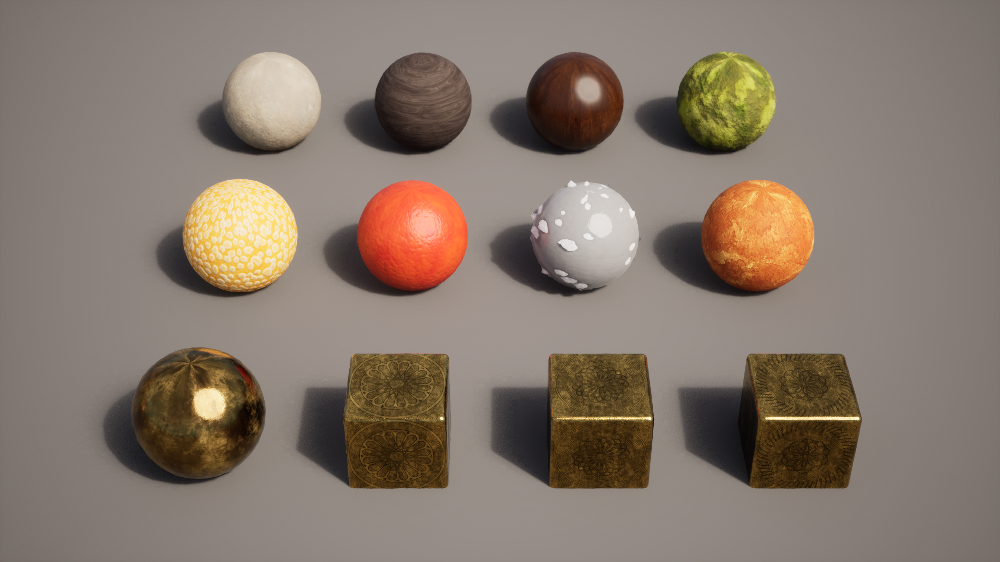
参考与灵感
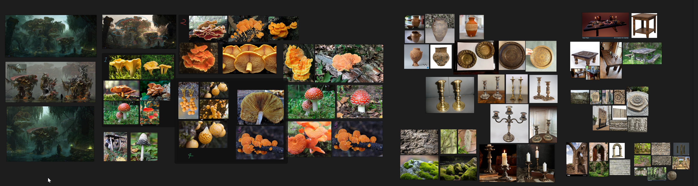
灵感与参考来自 ArtStation 艺术家 Yare Yue